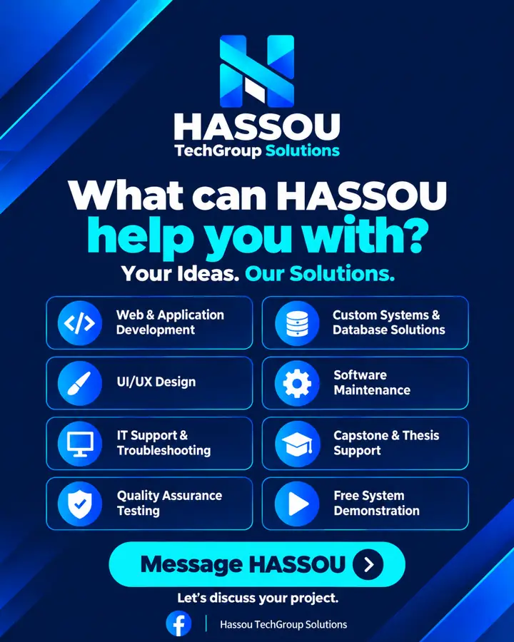

01
Web & Application Development
Responsive websites, web applications, portals and application-focused solutions matched to users and deployment requirements.
Discuss this service ↗HASSOU TechGroup Solutions helps turn complex workflows, unfinished applications and new ideas into practical digital solutions—from custom systems to interface improvements and technical support.
Free initial assessment · Separate quotation for implementation

HASSOU is a developing technology service brand formed around the experience of its core system developers. We approach projects through discovery, practical design, implementation, testing and clear communication.
Our published work includes independent, academic and professional collaborations completed by members of the HASSOU core team. Every case study identifies the development context so visitors can distinguish team experience from a direct HASSOU client engagement.
Explore each service area to see what it usually includes, when it fits best and which documented projects relate to it.
Responsive websites, web applications, portals and application-focused solutions matched to users and deployment requirements.
Discuss this service ↗Management systems, role-based records, assessments, inventory, scheduling, reports and database workflows.
Discuss this service ↗Interface design, responsive improvements, interaction patterns, brand assets and identity support within agreed scope.
Discuss this service ↗Existing-system reviews, debugging, feature refinement, testing, validation and maintenance.
Discuss this service ↗Project-focused help with software, configuration, deployment and technical issues within the team’s supported scope.
Discuss this service ↗Guided development assistance, documentation review, QA, technical consultation and pre-defense preparation.
Discuss this service ↗Responsive websites, portals, web apps, role-based dashboards and workflow-focused interfaces.
Responsive websites, portals, web apps, role-based dashboards and workflow-focused interfaces.
Best for launching a new idea, turning a manual process into an online tool or improving a user-facing platform.
Angono NHS Career Assessment · HowCan-i-Help · selected HASSOU interfaces
Browse genuine software screenshots supplied by our team. Project pages disclose the developer, organization or academic context and current status.
Healthcare workflows for patient intake, appointments, health records and center administration.
Academic thesis · Core-team collaboration
A web-based career assessment tool to help incoming SHS learners explore strand options.
Independent academic development · Core-team developer
Management information system for organizing operational records, activities and role-specific business workflows.
Independent full-stack development · Core-team developer
School credentials and attendance-related workflows supported through a dedicated application/system implementation.
Application-based system · Core-team developer
Property and real-estate management platform developed in a professional team environment.
Professional collaboration · Real IT OPC
Healthcare and assistance platform developed to support clinic-facing digital interactions.
Professional collaboration · Real IT OPC
Core-team portfolio includes individual development, thesis collaborations and professional experience. RITREMIS and HowCan-i-Help retain Real IT OPC attribution. Project screenshots are evidence of the actual interfaces, not generated demonstrations.
Open all case studies ↗Select each stage to see the expected output, what happens during that step and how the project moves forward.
Understand users, current pain points, information, constraints and goals.
Agree on scope, platform direction, modules, deliverables and milestones.
Outline structure, interfaces, interactions and feedback checkpoints.
Implement the solution, review functionality and refine approved features.
Deploy or deliver agreed files, documentation and support arrangements.
We begin by understanding the users, the workflow, the existing pain points and the real objective of the project.
Initial understanding of the workflow, problem statement, early scope direction and next-step recommendations.
Choose a project direction and its key requirements. You'll get a short brief to copy or include in your inquiry. It is not an automatic quotation.
Nothing is sent or saved while you fill out this planner. Use the contact form only when you're ready to share your brief.
Three complementary roles spanning system development, systems analysis, client relations, project coordination and marketing outreach.
System development, full-stack web workflows, UI/UX, documentation and project/client coordination. Direct project experience includes MBMIS and the Angono NHS career assessment.
Personal portfolio ↗Application development, backend logic, PHP/MySQL systems, database workflows, testing and integration. Direct project experience includes RSST SHS Credentials.
Team project and professional collaboration experience is detailed in the case studies.Supports HASSOU through marketing coordination, service presentation and client communications, helping prospective clients understand the team’s offerings and inquiry process.
Coordinates the communication and presentation of HASSOU services across outreach and client-facing materials.We prefer to clarify cost, scope, ownership and expectations before work begins.
Have another question? Contact us ↗Yes. The initial discussion and preliminary project review are free. Design, coding, testing, deployment or other implementation work is priced separately under an approved quotation.
No. The team has web, database-backed and application-based system experience. The supported platform and implementation approach are determined through discovery.
Yes, subject to access, technical review and agreed scope. We can assess bugs, unfinished features, UI/UX, data workflows and supported deployment issues.
We support implementation, enhancements, QA, documentation and demonstration preparation while students remain responsible for understanding and defending their own academic work.
We provide a separate scope-based quotation. Milestones, inclusions, revision limits and potential scope changes are specified in the proposal or agreement.
Source-code rights, handover deliverables, hosting access, credentials and documentation are agreed in writing before work begins.
Deployment, handover and ongoing support can be included in the original scope or arranged as a separate service.
Share the idea, your existing system, or the challenge you're trying to solve. We'll begin with a free preliminary assessment.
We don't promise a price or delivery date before reviewing the requirements. Paid procedures are quoted separately.